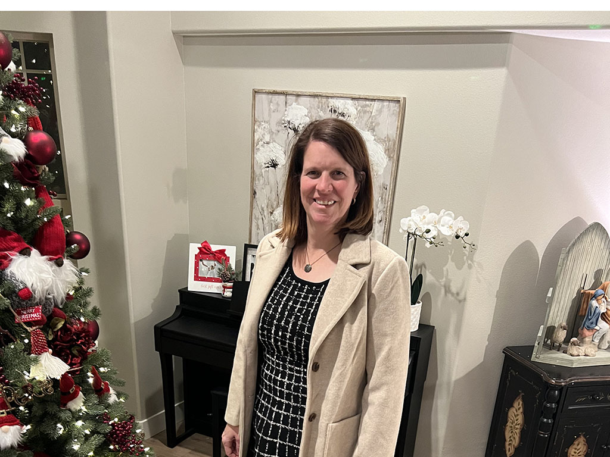

Shannon Hickman | WDD 130
Hello! My name is Shannon Hickman and I am from Herriman, Utah. I have 7 daughters and 4 grandchildren. My favorite things are camping with my family, reading, and cooking or baking. While camping my favorite activities are paddleboarding or enjoying a sunrise or sunset. The smell of bread baking is my favorite smells, as is the smell of lilacs in my yard. My happiest place is in the kitchen with my family surrounding me. My home is currently known as "grandma's playground" by the littles, or to my family members who often come and stay from out of town as their bed and breakfast. I currently work at a school as as Instructional Support Tech and support approximately 3000 computers and 200 employees. I hope to become a web developer and be an asset to my husband who is a full stack developer in his new business venture.